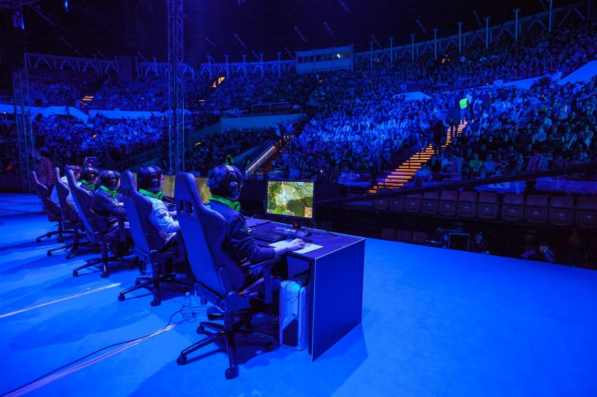
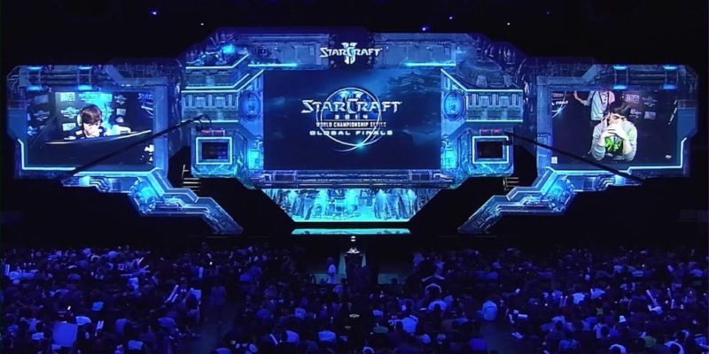

E-sports
Esports (also known as electronic sports, e-sports, or eSports) is a form of sport competition using video games. Esports often takes the form of organized, multiplayer video game competitions, particularly between professional players, individually or as teams. Although organized competitions have long been a part of video game culture, these were largely between amateurs until the late 2000s, when participation by professional gamers and spectatorship in these events through live streaming saw a large surge in popularity. By the 2010s, esports was a significant factor in the video game industry, with many game developers actively designing and providing funding for tournaments and other events.
The most common video game genres associated with esports are multiplayer online battle arena (MOBA), first-person shooter (FPS), fighting, card games, battle royales, and real-time strategy (RTS). Popular esport franchises include League of Legends, Dota, Counter-Strike, Overwatch, Super Smash Bros., and StarCraft, among many others. Tournaments such as the League of Legends World Championship, Dota 2's International, the fighting game-specific Evolution Championship Series (EVO) and Intel Extreme Masters are among the most popular in esports. Many other competitions use a series of league play with sponsored teams, such as the Overwatch League. Although the legitimacy of esports as a true sporting competition remains in question, they have been featured alongside traditional sports in some multinational events in Asia, with the International Olympic Committee also having discussed their inclusion into future Olympic events. By the late 2010s, it was estimated that the total audience of esports would grow to 454 million viewers, with revenue increasing to over US$1 billion. The increasing availability of online streaming media platforms, particularly YouTube and Twitch, have become central to the growth and promotion of esports competitions. Despite viewership being approximately 85% male and 15% female, with a majority of viewers between the ages of 18 and 34, female gamers have also played professionally. The popularity and recognition of esports first took place in Asia, specifically in China and South Korea, with the latter having licensed professional players since 2000. Despite its large video game industry, esports in Japan is relatively underdeveloped, with this being largely attributed to its broad anti-gambling laws which prohibit paid professional gaming tournaments. Outside of Asia, esports are also popular in Europe and the Americas, with both regional and international events taking place in those regions.
| Year: | 2017 | 2018 | 2019 | 2020 | 2021E | 2022E |
|---|---|---|---|---|---|---|
| E-sports viewership: | 335M | 395M | 454M | 518M | 580M | 645M |
Back to the top